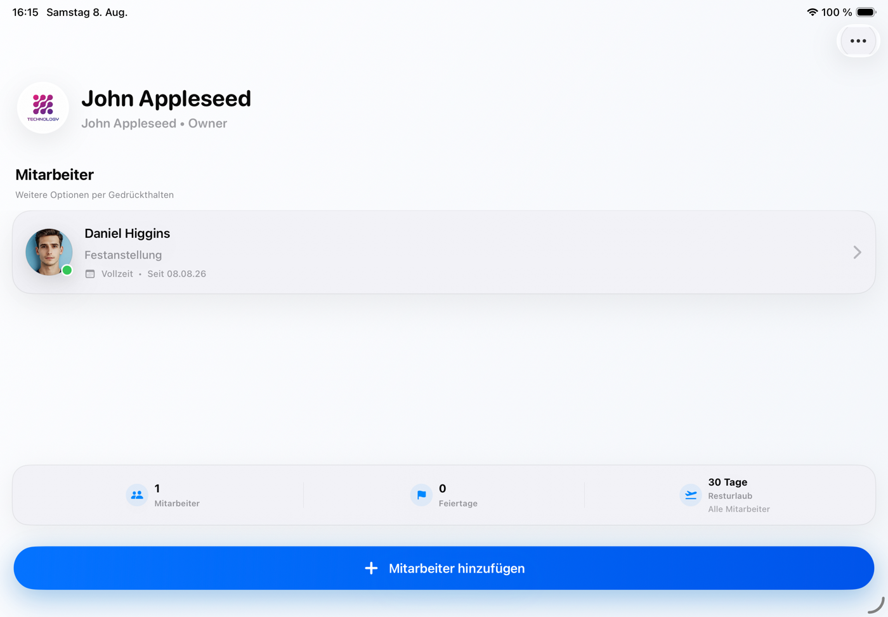

Smarte Zeiterfassung
Arbeitszeiten und Pausen übersichtlich erfassen.
Arbeitszeit klar organisiert
Arbeitszeiten, Teams und Berichte einfach und sicher verwalten.

Arbeit klar organisiert
ZeitPilot bündelt die wichtigsten Abläufe kleiner Unternehmen in einer verständlichen nativen Anwendung – ohne überladene Verwaltungsoberfläche.
Für den täglichen Einsatz
Alle wichtigen Werkzeuge für moderne Zeiterfassung.
Arbeitszeiten und Pausen übersichtlich erfassen.
Profile und Positionen an einem Ort verwalten.
Zeiten und Kosten verständlich auswerten.
Daten flexibel weiterverarbeiten.
Deine Arbeitsdaten bleiben unter deiner Kontrolle.
Sicherer Zugriff und zuverlässige Wiederherstellung.
Tageswerte, Pausen und Monatsstände bleiben pro Person übersichtlich und lassen sich jederzeit kontrollieren.
Profile, Positionen, Beschäftigungsumfang und relevante Kontaktdaten bleiben geordnet an einem Ort.
Auswertungen machen Zeitstände und Kosten sichtbar und bereiten Daten für Lohnbuchhaltung oder Archiv vor.
Unter deiner Kontrolle
Die zentralen Arbeitsdaten bleiben auf dem verwendeten Gerät.
Face ID oder Touch ID schützt die App vor unbefugtem Öffnen.
Optionale Backups unterstützen die Wiederherstellung und werden geschützt abgelegt.